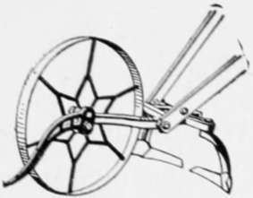
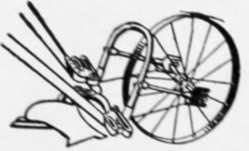

Herb Relationships
Description
This section is from the book "Culinary Herbs", by M. G. Kains. Also available from Amazon: Culinary Herbs, Their Cultivation, Harvesting, Curing and Uses.
Herb Relationships
Those readers who delight to delve among pedigrees, genealogies and family connections, may perhaps be a little disappointed to learn that, in spite of the odorous nature of the herbs, there are none whose history reveals a skeleton in the closet. They are all harmless. Now and then, to be sure, there occur records of a seemingly compromising nature, such as the effects attributed to the eating or even the handling of celery; but such accounts, harrowing as they may appear, are insufficient to warrant a bar sinister. Indeed, not only is the mass of evidence in favor of the defendant, but it casts a reflection upon the credibility of the plaintiff, who may usually be shown to have indulged immoderately, to have been frightened by hallucinations or even to have arraigned the innocent for his own guilt. Certain it is that there is not one of the sweet herbs mentioned in this volume that has not long enjoyed a more or less honored place in the cuisine of all the continents, and this in spite of the occasional footings of some would-be detractor.
Like those classes of society that cannot move with "the four hundred," the herbs are very exclusive, more exclusive indeed, than their superiors, the other vegetables. Very few members have they admitted that do not belong to two approved families, and such unrelated ones as do reach the charmed circles must first prove their worthiness and then hold their places by intrinsic merit.
These two coteries are known as the Labiatae and the Umbelliferae, the former including the sages, mints and their connections; the latter the parsleys and their relatives. With the exception of tarragon, which belongs to the Compositae, parsley and a few of its relatives which have deserted their own ranks, all the important leaf herbs belong to the Labiatae; and without a notable exception all the herbs whose seeds are used for flavoring belong to the Umbelliferae. Fennel-flower, which belongs to the natural order Ranunculaceae, or crowfoot family, is a candidate for admission to the seed sodality; costmary and southernwood of the Compositae seek membership with the leaf faction; rue of the Rutaceae and tansy of the Compositae, in spite of suspension for their boldness and ill-breeding, occasionally force their way back into the domain of the leaf herbs. Marigold, a composite, forms a clique by itself, the most exclusive club of all. It has admitted no members! And there seem to be no candidates.
Center Row Hand Cultivator
The important members of the Labiatae are:
Sage (Salvia officinalis, Linn.).
Savory (Satureia hortensis, Linn.).
Savory, winter (Satureia montana, Linn.).
Thyme (Thymus vulgaris, Linn.).
Marjoram (Origanum Marjoram; O. Onites, Linn.; and M. vulgare, Linn.).
Balm (Melissa officinalis, Linn.).
Basil (Ocimum Basilicum, Linn., and O. minimum, Linn.).
Spearmint (Mentha spicata, Linn., or M. viridis, Linn.).
Peppermint (Mentha Piperita, Linn.).
Rosemary (Rosmarinus officinalis, Linn.).
Clary (Salvia Sclarea, Linn.).
Pennyroyal (Mentha Pulegium, Linn.).
Horehound (Marrubium vulgare, Linn.).
Hyssop (Hyssopus vulgaris, Linn.).
Catnip (Nepeta Cataria, Linn.).
Lavender (Lavandula vera, D. C.; L. spica, D. C).
These plants, which are mostly natives of mild climates of the old world, are characterized by having square stems; opposite, simple leaves and branches; and more or less two-lipped flowers which appear in the axils of the leaves, occasionally alone, but usually several together, forming little whorls, which often compose loose or compact spikes or racemes. Each fertile blossom is followed by four little seedlike fruits in the bottom of the calyx, which remains attached to the plant. The foliage is generally plentifully dotted with minute glands that contain a volatile oil, upon which depends the aroma and piquancy peculiar to the individual species.
The leading species of the Umbelliferae are: Parsley (Carum Petroselinum, Benth and Hook.). Dill (Anethum graveolens, Linn.). Fennel (Foeniculum officinale, Linn.). Angelica (Archangelica officinalis, Hoofm.). Anise (Pimpinella anisum, Linn.). Caraway (Carum Carui, Linn.). Coriander (Coriandrum sativum, Linn.}, Chervil (Scandix Cerefolium, Linn.). Cumin or Cummin (Cuminum Cyminum, Linn.). Lovage (Levisticum officinale, Koch.). Samphire (Crithmum maritimum, Linn.).
Like the members of the preceding group, the species of the Umbelliferae are principally natives of mild climates of the old world, but many of them extend farther north into the cold parts of the continent, even beyond the Arctic Circle in some cases. They have cylindrical, usually hollow stems; alternate, generally compound leaves the basis of whose stalks ensheath the branches or stems; and small flowers almost always arranged in compound terminal umbels. The fruits are composed of two seedlike dry carpels, each containing a single seed, and usually separating when ripe. Each carpel bears five longitudinal prominent ribs and several, often four, lesser intermediate ones, in the intervals between which numerous oil ducts have their openings from the interior of the fruit.
Hand Plow
The oil is generally found in more or less abundance also in other parts of the plant, but is usually most plentiful in the fruits.
The members of the Compositae used as sweet herbs are, with the exception of tarragon, comparatively unimportant, and except for having their flowers in close heads "on a common receptacle, surrounded by an involucre," have few conspicuous characters in common. No further space except that required for their enumeration need here be devoted to them. And this remark will apply also to the other two herbs mentioned further below.
Continue to:
- prev: Cultivation
- Table of Contents
- next: Compositae